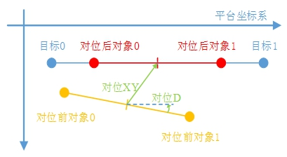
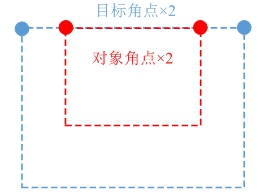
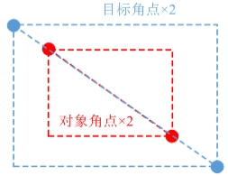
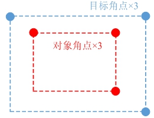
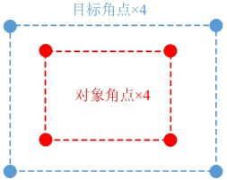
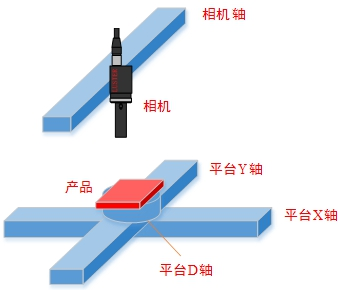
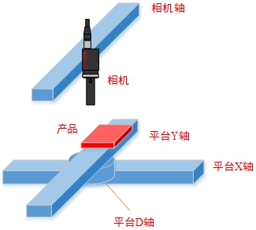
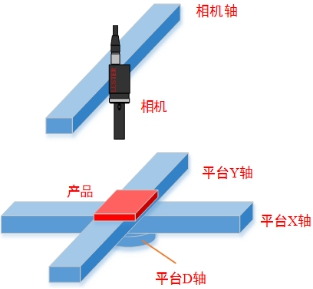

Căn chỉnh là trong cùng một hệ tọa độ platform, dựa trên nhiều đặc trưng của đối tượng và mục tiêu, tính toán lượng lệch XYD/XDY/DXY cần di chuyển của robot/platform, để đối tượng và mục tiêu được căn chỉnh trùng khớp. Căn chỉnh hai điểm phổ biến nhất được thể hiện như trong Hình 1.

Trong tính toán căn chỉnh đa điểm, tùy theo số lượng lấy mẫu và phân bố vị trí khác nhau, căn chỉnh điểm với điểm của sản phẩm hình chữ nhật được chia thành bốn trường hợp cụ thể, gồm 2 điểm liền kề, 2 điểm đối góc, 3 điểm dạng L, 4 điểm hình chữ nhật, như trong Hình 2.




Công cụ này dùng để tính toán lượng lệch căn chỉnh giữa nhiều điểm. Hiện áp dụng cho trường hợp có từ 2 điểm trở lên, đồng thời độ dài của vector đối tượng và vector mục tiêu phải bằng nhau.
| Phân loại | Tên tham số | Mô tả tham số |
|---|---|---|
| Cửa sổ thuộc tính | Loại hệ tọa độ | Chọn căn chỉnh trong hệ tọa độ platform XYD/hệ tọa độ platform XDY/hệ tọa độ platform DXY. |
| Cửa sổ hình ảnh | Không có | Không có |
| Liên kết dữ liệu | Vector tọa độ điểm đối tượng | Vector được tạo thành từ tọa độ platform của các điểm đối tượng. |
| Vector tọa độ điểm mục tiêu | Vector được tạo thành từ tọa độ platform của các điểm mục tiêu. | |
| Hướng trục platform | Hướng dương của từng trục platform. | |
| Lượng bù X | Lượng bù cần cộng thêm theo hướng X vào kết quả tính toán căn chỉnh đầu ra | |
| Lượng bù Y | Lượng bù cần cộng thêm theo hướng Y vào kết quả tính toán căn chỉnh đầu ra | |
| Lượng bù D | Lượng bù cần cộng thêm theo hướng D vào kết quả tính toán căn chỉnh đầu ra | |
| Giao diện nâng cao | Không có | Không có |
| Phân loại | Tên tham số | Mô tả tham số |
|---|---|---|
| Cửa sổ giám sát | Lượng lệch căn chỉnh tương đối | Kết quả lượng lệch căn chỉnh tương đối được tính toán. |
| Kết quả thực thi | Kết quả thực thi của công cụ. | |
| Thời gian thực thi | Thời gian thực thi của công cụ. | |
| Cửa sổ hình ảnh | Không có | |
| Liên kết dữ liệu | Lượng lệch căn chỉnh tương đối | Xuất kết quả lượng lệch căn chỉnh tương đối đã tính toán, dùng cho công cụ tiếp theo, giống với tham số trong cửa sổ giám sát. |
Platform XYD: loại platform phổ biến nhất trong dự án, trục X và trục Y của nó có quan hệ vuông góc, trục xoay D trực tiếp xoay sản phẩm và không ảnh hưởng đến quan hệ góc giữa trục X và trục Y, như trong Hình 3(a).
Platform XDY: trục xoay D của loại platform này được lắp giữa trục X và trục Y, trực tiếp quyết định góc giữa trục X và trục Y. Như trong Hình 3(b).
Platform DXY: trục X và trục Y của platform này sẽ xoay theo trục D, nhưng trục X và trục Y luôn giữ quan hệ vuông góc, như trong Hình 3©.



Thứ tự các điểm tọa độ trong vector tọa độ điểm đối tượng và vector tọa độ điểm mục tiêu cần giữ nhất quán, để điểm đối tượng tương ứng với điểm mục tiêu.
Vector tọa độ điểm đối tượng hoặc vector tọa độ điểm mục tiêu đầu vào có thể được tạo bằng công cụ tạo mảng hai phần tử, công cụ tạo mảng ba phần tử, công cụ tạo mảng bốn phần tử, công cụ tạo mảng, chọn thuộc tính kiểu dữ liệu là “GcCoordPos”.
Cách sử dụng tham khảo công cụ tính toán căn chỉnh đa điểm trong “\Samples\标准标定+基准四点两线对位.gvp”.